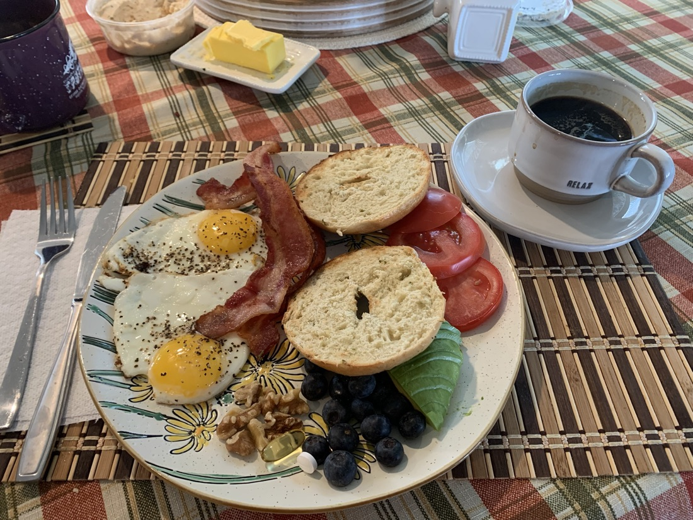
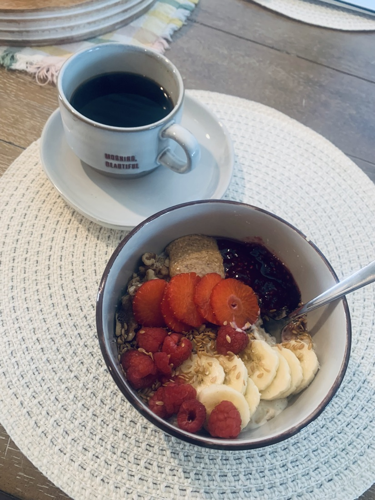
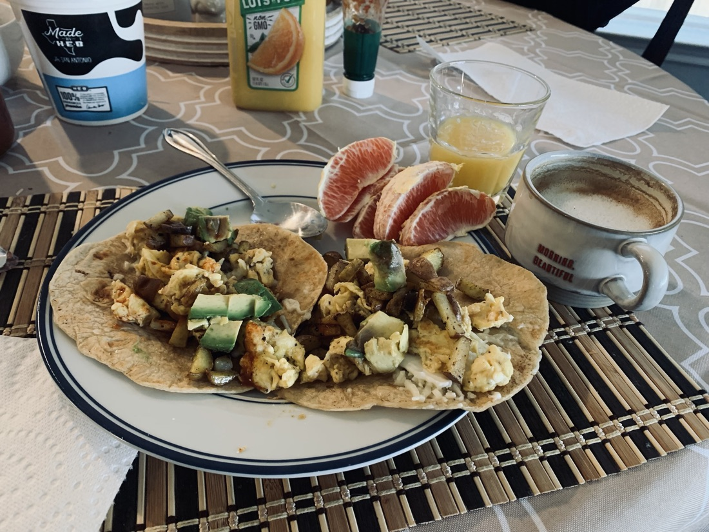
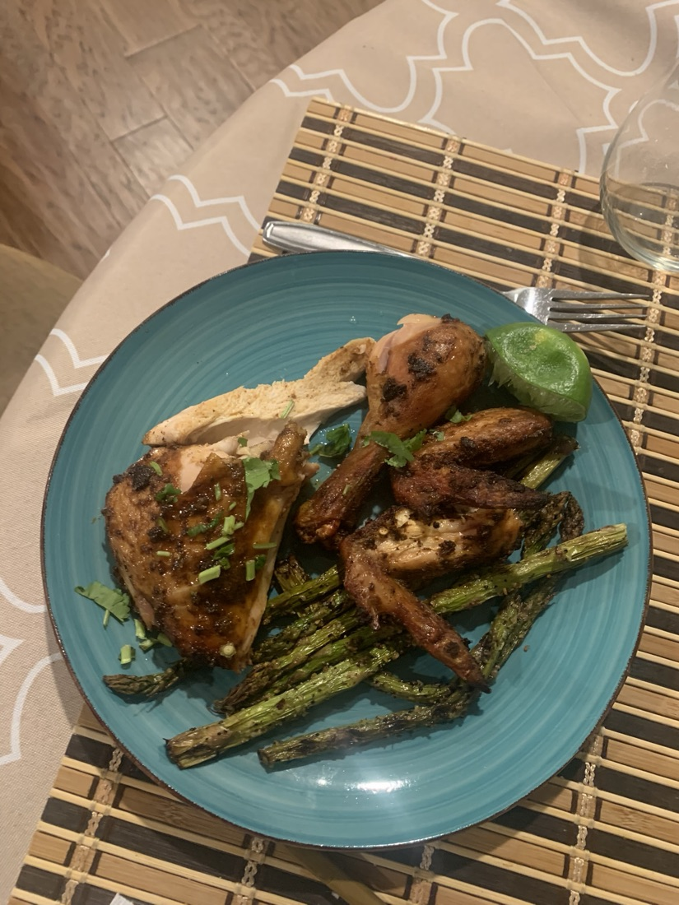
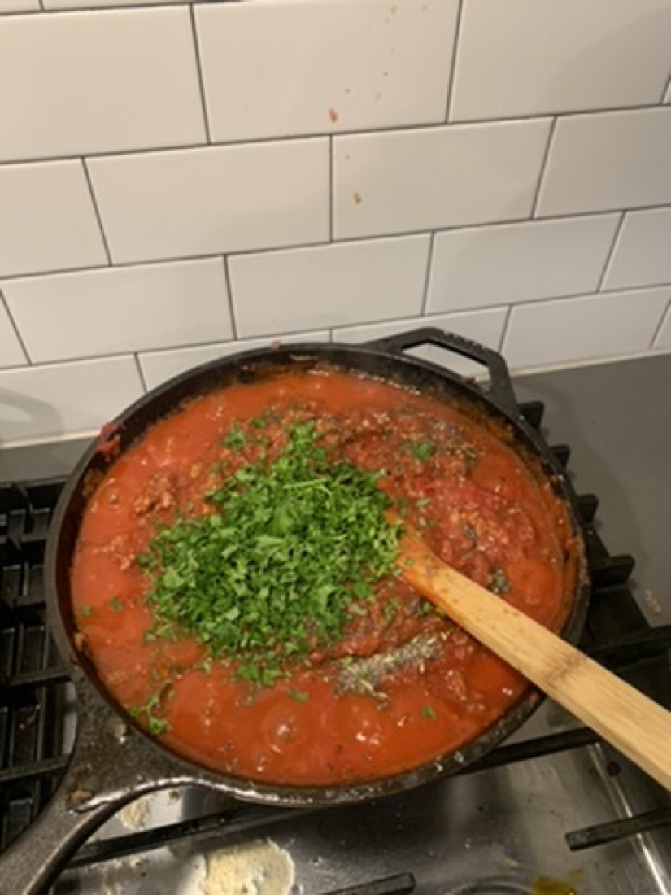
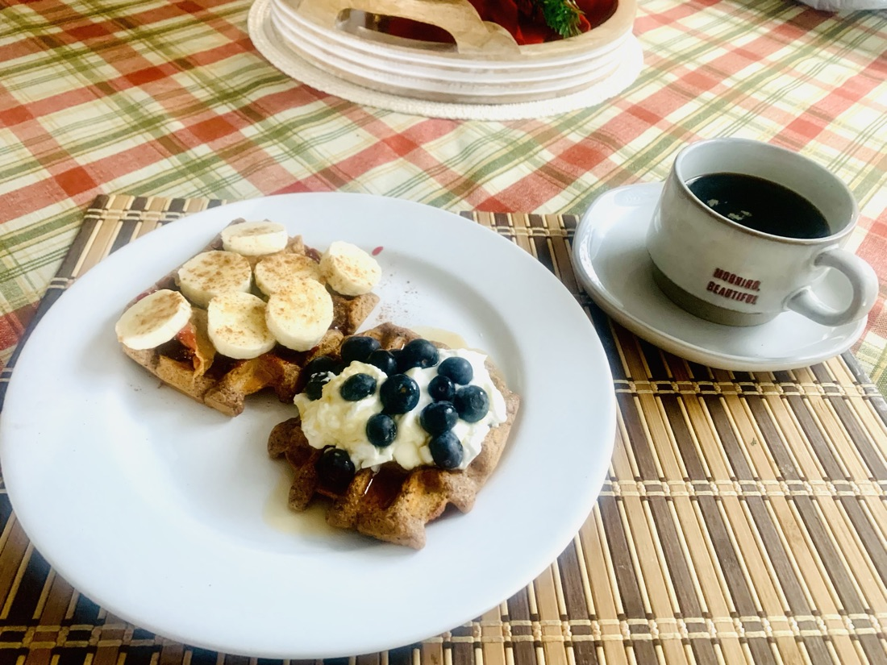

Real meals
No sad diet plates, no seed oils, no 40-ingredient recipes. Just simple, whole-food meals that keep your blood sugar steady and your energy even — the same ones I feed my own family. Treat them as templates, not rules.
How to use these
Protein first, then fiber and fat, and save the starch for last. Cook in butter, ghee, or olive oil — never seed oils. Do that and almost anything becomes blood-sugar-friendly.

The breakfast that keeps you full until lunch — zero mid-morning crash or snack hunt.

Real dairy, real fiber. The opposite of a sugary "healthy" cereal that spikes you by 10am.

Everything a drive-thru breakfast wishes it was — made at home, so you control the oil.

One tray, ten minutes of effort, real protein and vegetables. Weeknight-proof.

Make a big batch. Real bread and pasta are fine — it's the seed oils and additives that aren't.

Proof that "treat" and "steady" can share a plate. Yogurt and berries instead of a syrup flood.
These are general, whole-food meal ideas — not medical or personalized nutrition advice. If you're managing a condition like diabetes, check with your doctor before making changes.
Coaching turns these templates into a plan for your labs, your tastes, and your week. Start with a free 20-minute call.
Free · 20 minutes · no sales pitch · I reply within a day